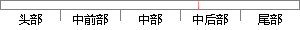

因此对于分类而言，人和计算机的分类方式还是有内在联系的。
片段位置图

相似结果|
相似片段 1：分类的情况，对于问题分类而言属于N分类的情况，主要有两种方式lq：一 种是方式需要训练 N个分类器，第 i个分类器是看看是属于分类 i还是属于分类 i的补集(除去i的N．1个分类)；另一种方式需要训练
相似片段 2：的情况, 对于问题分类而言属于 N 分类的情况, 主要有两种方式[6]:一种是方式需要训练 N 个分类器, 第 i 个分类器是看看是属于分类 i 还是属于分类 i 的补集(除去 i 的N-1 个分类
|
※ 片段修改建议 ※
近似词参考：- 因此：是以 因而
- 对于：对 对付
- 方式：体例 体式格局 方法
- 还是：仍是 照旧 照样
系统自动生成语句：是以对分类而言，人和计算机的分类体例仍是有内在联系的。
注：本片段修改建议为系统自动生成，仅供参考。